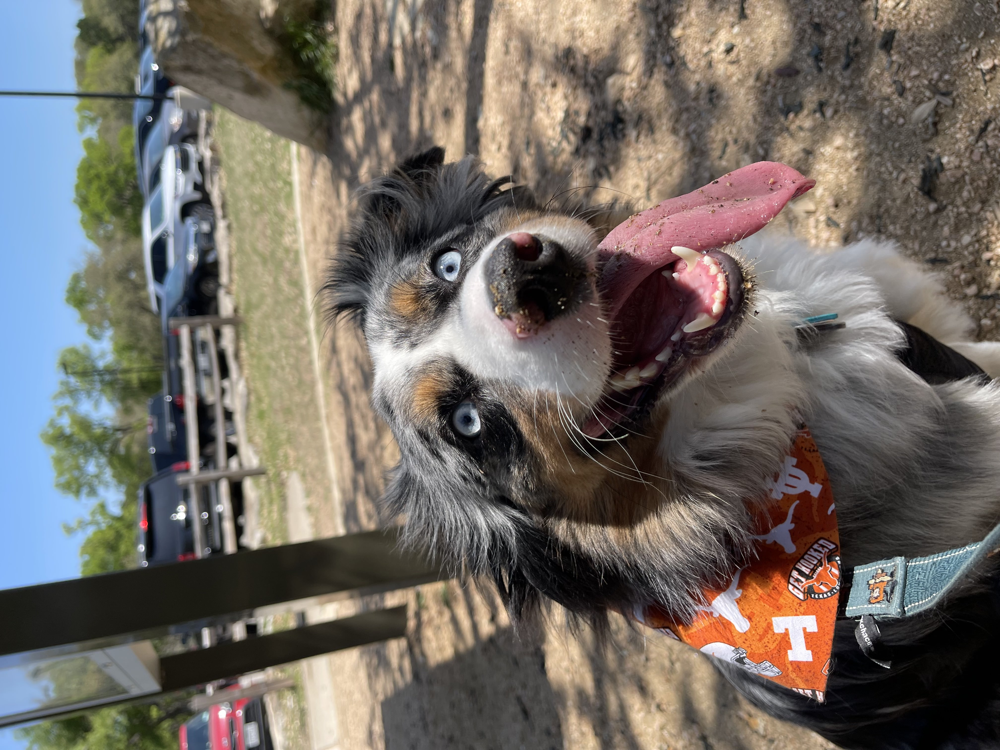

About Me

Hi, my name is Charlie!
I am a passionate Software Engineer that designs and builds technology in Austin, TX.
I graduated from The University of Texas at Austin (Hook 'Em!) with a Bachelor of Science in Computer Science (a Top 10 CS Program!). I have experience with a wide range of technologies and languages and am always learning new ones. I love solving challenges and delivering great user experiences to customers. As I have mostly been a part of small teams, I am very comfortable designing, implementing and deploying reliable software.
When I am not coding, you can find me walking my Australian Shepherd Ollie, trying new foods around town with my fiancée, improving my tennis game, or rooting for Manchester City!